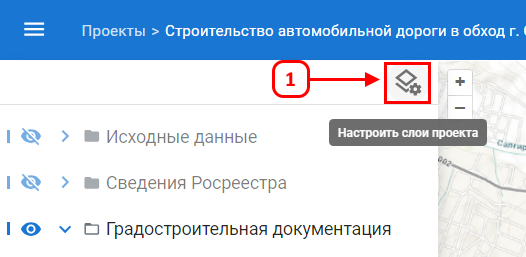
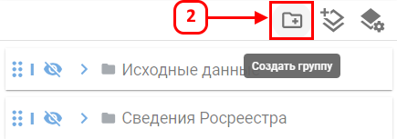
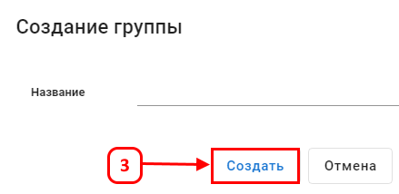

Создание группы слоев
Группа используется для объединения нескольких слоев в один блок в списке слоев.
Создание группы
Для создания группы выполните следующие шаги:



После выполнения действий новая группа появится в списке слоев, но пока она будет пустой в списке проектов она будет не видна.